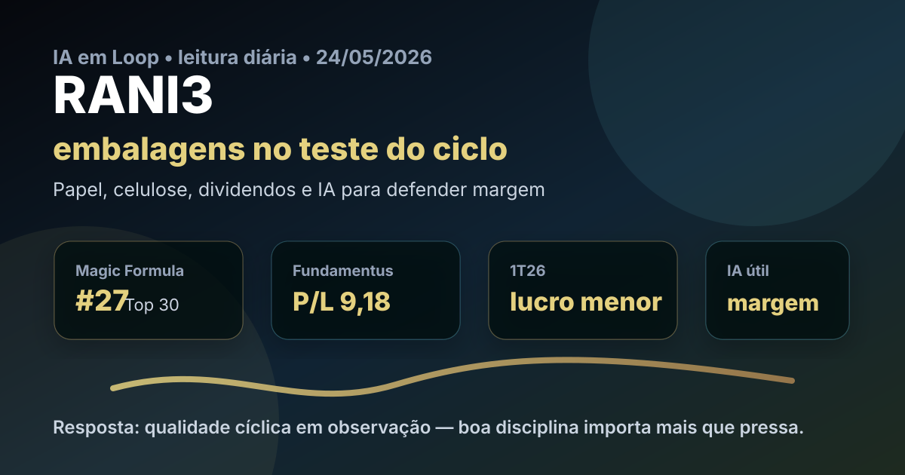

24/05: RANI3, embalagens e IA no teste do ciclo
Depois de tecnologia, seguros, educação, logística, identidade digital e locação de equipamentos, a leitura diária entra em um setor menos narrativo e mais físico: embalagens de papel. RANI3 aparece no Top 30 da Magic Formula, mas chegou ao radar junto com uma notícia incômoda: lucro menor no 1T26. A pergunta é se isso é apenas ruído de ciclo ou sinal de deterioração estrutural.

A tese combina preço, retorno sobre capital e demanda recorrente por embalagens, mas exige separar queda temporária de volume de perda real de competitividade.
Resposta curta: ainda é estudo, não euforia
RANI3 parece uma tese de qualidade cíclica em observação. A companhia opera em um setor essencial — embalagens acompanham alimentos, varejo, indústria e e-commerce —, mas o lucro trimestral mostrou que preço baixo no ranking não elimina risco de volume, custo de fibra, energia, câmbio, capex e alavancagem. A leitura IA em Loop é positiva para acompanhar, porém mais disciplinada do que agressiva: o investidor precisa exigir sinais de normalização operacional antes de tratar o múltiplo como barganha óbvia.
O que significa “qualidade cíclica”? É uma empresa com produto necessário e operação eficiente, mas cujo lucro oscila com demanda, preço de insumos, nível de estoques e ciclo industrial. Não é um negócio ruim por ser cíclico; é um negócio que precisa ser comprado com margem de segurança e acompanhado por indicadores operacionais.
Por que RANI3 hoje?
No ranking Magic Formula de maio do IA em Loop, Irani aparece em 27º lugar, setor Papel e celulose, com ROIC de 15,32%, earnings yield de 14,43% e score 72. Não é uma campeã isolada do ranking, mas entra como alternativa para diversificar a sequência editorial para materiais, indústria e embalagens — uma cadeia que fica no meio entre consumo, logística e economia real.
A consulta ao Fundamentus feita hoje mostrava cotação de R$ 8,08, P/L de 9,18, P/VP de 1,27, dividend yield de 6,0%, P/EBIT de 4,56, margem EBIT de 24,4%, margem líquida de 12,1%, ROIC de 13,8%, ROE de 13,8%, volume médio de R$ 7,5 milhões em dois meses e balanço processado de 31/03/2026.
O 1T26 muda a tese?
Notícias públicas recentes apontaram resultado mais fraco no 1T26, com lucro líquido de R$ 19,4 milhões e queda anual expressiva, em um contexto de volumes temporariamente menores de papel e pressão sobre a leitura de curto prazo. Ao mesmo tempo, a companhia manteve discussão de dividendos e segue em um setor no qual escala, eficiência fabril e disciplina comercial importam muito.
A resposta da IA em Loop é: o 1T26 não mata a tese, mas impede romantizar o ranking. Um trimestre ruim pode ser ruído quando vem de sazonalidade, parada, mix ou volume temporário. Vira alerta estrutural quando a empresa perde preço, margem, clientes, geração de caixa e controle de dívida ao mesmo tempo.
| Sinal | Leitura prática | O que monitorar |
|---|---|---|
| Lucro menor | Pressiona a confiança de curto prazo | Se a queda foi volume pontual ou margem recorrente |
| Dividendos | Mostram caixa e disciplina, mas não bastam | Payout versus necessidade de capex e dívida |
| ROIC ainda razoável | Indica negócio que pode remunerar capital | Manutenção do retorno após ciclo fraco |
| Setor essencial | Embalagem tem demanda recorrente | Preço de papel, custos e utilização industrial |
Onde a IA pode ser vantagem real
Em papel e embalagens, IA não é uma história de aplicativo bonito. O ganho possível está no chão de fábrica e na cadeia comercial: previsão de demanda, otimização de mix, redução de refugo, manutenção preditiva, planejamento de energia, roteirização logística, precificação por cliente e leitura de inadimplência. Se a empresa usa dados para vender melhor, produzir com menos desperdício e comprar insumos de forma mais inteligente, a IA aparece em margem, capital de giro e retorno sobre capital.
O lado bom
Produto necessário, base industrial, histórico de dividendos, múltiplos moderados e retorno sobre capital que ainda conversa com a filosofia da Magic Formula.
O lado perigoso
Lucro trimestral fraco, volatilidade de volumes, custo de insumos, eventual excesso de capex e risco de confundir dividendo passado com geração de caixa futura.
Compra, venda ou espera?
Para carteira nova: RANI3 parece mais um caso de espera ativa ou compra parcelada do que uma entrada apressada. O ranking coloca a ação no radar, mas o resultado recente pede confirmação. O investidor que já acompanha o setor pode estudar posição pequena; quem não conhece papel e embalagens deveria primeiro entender margem, dívida, capex e ciclo de volumes.
Para quem já tem: o ponto não é vender automaticamente por causa de um trimestre ruim. O ponto é cobrar evidência: recuperação de volumes, preservação de margem, dividendos compatíveis com caixa, dívida controlada e clareza sobre investimentos. Se esses sinais aparecem, a tese ganha força. Se não aparecem, o múltiplo baixo pode ser apenas reflexo correto de um lucro sob pressão.
Gatilhos para melhorar a leitura: próximos resultados com Ebitda resiliente, capital de giro normalizando, volumes de papel e embalagem recuperando, dívida líquida confortável e dividendos financiados por caixa operacional. Gatilhos para piorar: nova queda de margem, aumento de alavancagem, capex sem retorno claro ou perda de preço para defender volume.
Leitura IA em Loop
RANI3 é o tipo de ação que justifica o método, mas também testa a disciplina do método. A Magic Formula procura empresas boas e baratas; o trabalho humano é perguntar se o lucro usado no ranking é sustentável. No caso de Irani, a resposta ainda é condicional: há negócio essencial, preço razoável e dividendos, mas o 1T26 obriga paciência. O melhor uso do ranking hoje é colocar RANI3 na lista de acompanhamento, não fingir que todo Top 30 é compra automática.